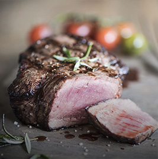

Подбор рецептов
Рецепты
- Новые рецепты
- Популярные
- Рекомендуем
-
Дарья Федоренко
Утиные ножки с овощами и грудинкой
135 минСложно125 ккалговядина, масло топлёное, лук репчатый, морковь, редька, перец сладкий, помидоры, томат-пюре, картофель, чеснок, бульон мясной, соль, перец чёрный, зелень петрушкиДарья ФедоренкоСалат из свеклы с козьим сыром и медовой заправкой
35 минЛегко225 ккалговядина, масло топлёное, лук репчатый, морковь, редька, перец сладкий, помидоры, томат-пюре, картофельДарья ФедоренкоАмериканский тыквенный пирог с корицей
235 минСложно25 ккалговядина, масло топлёное, лук репчатый, морковь, редька, перец сладкий, помидоры, томат-пюре, картофельДарья ФедоренкоСалат «Цезарь» традиционный с фасолью
107 минСложно105 ккалговядина, масло топлёное, лук репчатый, морковь, редька, перец сладкий, помидоры, томат-пюре, картофель, чеснок, бульон мясной, соль, перец чёрный, зелень петрушкиДарья ФедоренкоСоте из брюссельской капусты с варено-копченым окороком
35 минЛегко15 ккалговядина, масло топлёное, лук репчатый, морковь, редька, перец сладкий, помидоры, томат-пюре, картофель, чеснок, бульон мясной, соль, перец чёрный, зелень петрушкиДарья ФедоренкоЖареные баклажаны с помидорами
135 минСложно125 ккалговядина, масло топлёное, лук репчатый, морковь, редька, перец сладкий, помидоры, томат-пюре, картофель, чеснок, бульон мясной, соль, перец чёрный, зелень петрушки -
Дарья Федоренко
Наварен из говядины
35 минЛегко225 ккалговядина, масло топлёное, лук репчатый, морковь, редька, перец сладкий, помидоры, томат-пюре, картофельДарья ФедоренкоБрюссельская капуста с белым соусом с сыром
235 минСложно25 ккалговядина, масло топлёное, лук репчатый, морковь, редька, перец сладкий, помидоры, томат-пюре, картофельДарья ФедоренкоПеченочный торт с морковью и луком
107 минСложно105 ккалговядина, масло топлёное, лук репчатый, морковь, редька, перец сладкий, помидоры, томат-пюре, картофель, чеснок, бульон мясной, соль, перец чёрный, зелень петрушкиДарья ФедоренкоКлассический крабовый салат с огурцом и мидиями
35 минЛегко15 ккалговядина, масло топлёное, лук репчатый, морковь, редька, перец сладкий, помидоры, томат-пюре, картофель, чеснок, бульон мясной, соль, перец чёрный, зелень петрушкиДарья ФедоренкоУтиные ножки с овощами и грудинкой
135 минСложно125 ккалговядина, масло топлёное, лук репчатый, морковь, редька, перец сладкий, помидоры, томат-пюре, картофель, чеснок, бульон мясной, соль, перец чёрный, зелень петрушкиДарья ФедоренкоСалат из свеклы с козьим сыром и медовой заправкой
35 минЛегко225 ккалговядина, масло топлёное, лук репчатый, морковь, редька, перец сладкий, помидоры, томат-пюре, картофель -
Дарья Федоренко
Салат «Цезарь» традиционный с фасолью
107 минСложно105 ккалговядина, масло топлёное, лук репчатый, морковь, редька, перец сладкий, помидоры, томат-пюре, картофель, чеснок, бульон мясной, соль, перец чёрный, зелень петрушкиДарья ФедоренкоСоте из брюссельской капусты с варено-копченым окороком
35 минЛегко15 ккалговядина, масло топлёное, лук репчатый, морковь, редька, перец сладкий, помидоры, томат-пюре, картофель, чеснок, бульон мясной, соль, перец чёрный, зелень петрушкиДарья ФедоренкоЖареные баклажаны с помидорами
135 минСложно125 ккалговядина, масло топлёное, лук репчатый, морковь, редька, перец сладкий, помидоры, томат-пюре, картофель, чеснок, бульон мясной, соль, перец чёрный, зелень петрушкиДарья ФедоренкоНаварен из говядины
35 минЛегко225 ккалговядина, масло топлёное, лук репчатый, морковь, редька, перец сладкий, помидоры, томат-пюре, картофельДарья ФедоренкоБрюссельская капуста с белым соусом с сыром
235 минСложно25 ккалговядина, масло топлёное, лук репчатый, морковь, редька, перец сладкий, помидоры, томат-пюре, картофельДарья ФедоренкоПеченочный торт с морковью и луком
107 минСложно105 ккалговядина, масло топлёное, лук репчатый, морковь, редька, перец сладкий, помидоры, томат-пюре, картофель, чеснок, бульон мясной, соль, перец чёрный, зелень петрушки